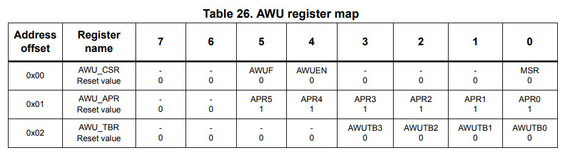

暫存器

.equ PB_ODR, 0x5005
.equ PB_IDR, 0x5006
.equ PB_DDR, 0x5007
.equ PB_CR1, 0x5008
.equ PB_CR2, 0x5009
.equ AWU_CSR, 0x50f0
.equ AWU_APR, 0x50f1
.equ AWU_TBR, 0x50f2
.area data
.area sseg
.area home
int main
int 0
int 0
int awu_handler
.area cseg
main:
mov PB_DDR, #0x20
mov PB_CR1, #0x20
bset PB_ODR, #5
mov AWU_APR, #0x3e
mov AWU_TBR, #0x0d
mov AWU_CSR, #0x10
halt
loop:
jp loop
awu_handler:
mov AWU_CSR, #0
bres PB_ODR, #5
iret
完成